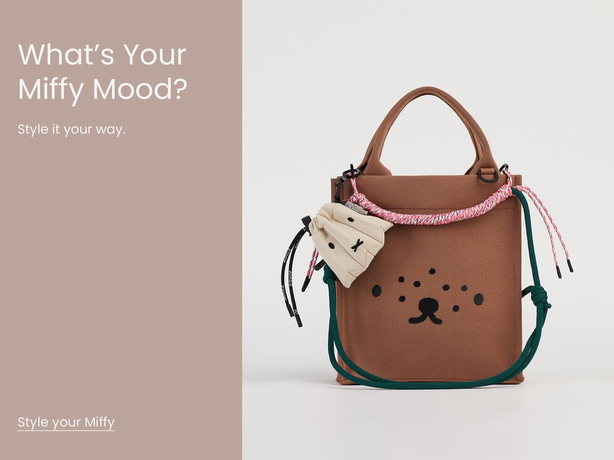
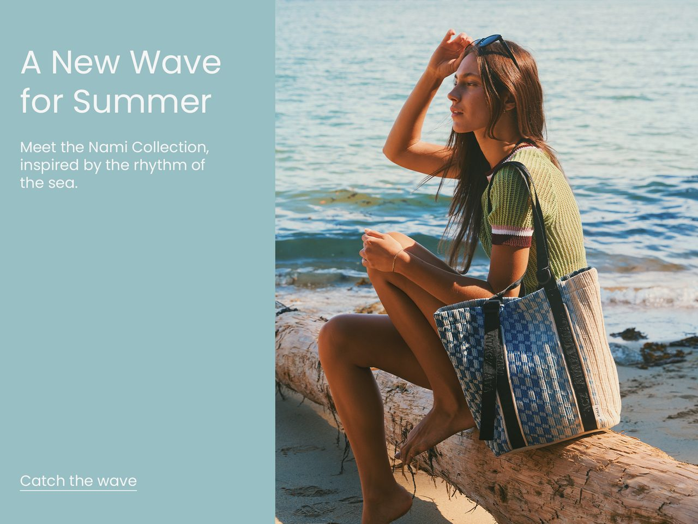
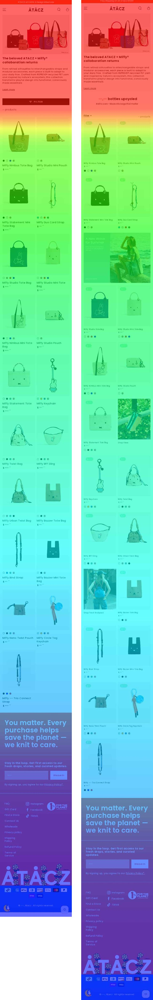

02 · PLP Revamp
Making a product grid introduce the brand
Redesigning a collection page for visitors who never see the homepage — and learning that my A/B test split the whole store’s traffic to measure a change on a single page in it.
- +9.4%actual scroll distance
- +8.2%product click-through
- 58%badge exposure, first row
43-day split test, 70,716 visits assigned; click-through moved 9.05% → 9.80%. The result lands inside the predicted range, but only 2,327 visitors ever reached the redesigned page — the split was store-wide, the change was not. That gap is the finding.
1 · The problem
Half our paid visitors never see the homepage.
51% of paid-social sessions land directly on a collection page. Only 20% start at the homepage. For most of the people we pay to acquire, a product grid is doing the homepage’s job — and it says nothing about who we are.
57% of all traffic is cold paid social, converting at roughly 0.1%. They arrive knowing nothing about the brand, land on a grid of bags at a premium price point, and the page offers no reason for it.
What the page was missing wasn’t features. It was context. No upcycling story at the point of decision. No explanation of the premium. And mix-and-match — the brand’s biggest differentiator and an AOV lever — invisible on a grid.
2 · Ruling out the wrong problems
A grid that converts badly invites two obvious diagnoses: it is leaking conversions, or it is hard to browse. Both turned out to be wrong, and ruling them out is what set the scope of the redesign.
It is not the conversion bottleneck
Before proposing anything I checked whether the PLP was where the money was being lost. It wasn’t.
| PLP metric | Paid social | Organic search |
|---|---|---|
| Scroll depth (median) | 56% | 53% |
| PLP → PDP | 27.3% | 28.0% |
| Time on page (median) | 14s | 14s |
| Purchase conversion | ~0.1% | 0.9% |
Behaviour on the page is nearly identical across channels, yet conversion differs by 9×. Whatever loses a paid visitor happens after they leave this page, not on it. No PLP redesign reaches that, so the proposal ruled conversion out of scope and committed instead to the two things this page genuinely controls: brand presence, and click-through into products.
Fixing the target metrics in writing, before building anything, is what kept the report honest later — when results came in I couldn’t quietly promote whichever number happened to look good.
It is not a browsing problem
With 60 SKUs across collections that are already categorised, scrolling the whole grid costs less than opening a filter panel. Better browsing tools would have solved a problem this page does not have.
What that leaves is a brief, not a bug list. Nothing on the page is broken. The page simply has nothing to say to someone who has never heard of the brand and is looking at a $163 bag. So the work became: add brand context without adding an exit, and without pushing product further down the page. Every decision below is that brief applied.
3 · Decisions
Taking space back before adding anything
Quick view was desktop-only, and this store is 97% mobile. Not by intent — by CSS. Both of its triggers were revealed on :hover, inside an @media (hover: hover) block, so on a phone neither ever appeared. Usage rounded to nothing because almost nobody was on a device that could reach it. Meanwhile it still cost the card two things: the circular button in the top-right corner, and a second call to action laid over every photo.
I turned it off. One section setting removes both triggers at once, and the theme keeps the markup, so it is reversible rather than deleted. The top-right it held is still empty; the PET badge went to the top-left, which was free. The point wasn’t to swap one mark for another in the same spot — it was that the card now carries one always-visible mark where it used to carry two that a phone could never reveal.
The filter got smaller, not removed. The whole catalogue is 60 products — bags, accessories and straps together — so not many people were ever going to need a filter to get through it. It went from a full-width button with an icon to plain underlined text with a plus after it: still there for anyone who wants it, but no longer sized like a catalogue you have to narrow down before you can shop.
The card’s own hierarchy got re-cut too. The old card opened with a row that paired the vendor — “Atacz”, on an Atacz-only store — with the colour swatches pushed to its far right, then the title at 15px, the price at 18px, and a star rating under it. Every product said the same brand name. And most products have no reviews at all, so a rating row on a grid is mostly an empty slot pretending to be information — it belongs on the product page, shown only for the products that actually have one.
So the vendor and the rating came off, the title went to 12px and the price to 14px, and the swatches moved out of that row to sit beneath the price. On a grid where the photo is doing the selling, the name and the price are what should be read next — not a brand line that never varies, and not a row of dots you can’t act on until the bag has already interested you.
The two versions side by side, both lifted from the themes that ran them. Hover either photo. On the left,
the circular quick-view button appears in the top-right and Choose options slides over the photo — both only on
hover, inside an @media (hover: hover) block, so a phone got neither. On the right the top-right stays empty,
the PET badge is always visible, and the photo carries one button instead of two. Below the photo the card is retuned too: the vendor line and the star rating come off, the title drops from the theme’s default 15px to 12px and the price from 18px to 14px, and the colour swatches leave the vendor’s row to sit under the price — so name and price read first.
Pick a colour on either card: the photo swaps in place and hovering it reveals that colour’s second shot. Only on the right does that raise Add to cart — on the live page the button does not exist until a variant is chosen, because a card with several colours has nothing specific to add yet.
Before
Quick view on · vendor and swatches share a row · ratings on · title 15px, price 18px · filter as a full-width button


Twist Bag – Peach Jelly
$163.00
After
Quick view off · no vendor, no ratings · swatches below the price · title 12px, price 14px · filter as underlined text
Twist Bag
$163.00
One metafield, two surfaces
Between the top banner and the product grid sits the brand slogan — knit to care — and a live count of every PET bottle the brand has upcycled to date.
Each product carries a pet_bottle_badge2 metafield, and it drives both scales at once:
- On a product card, it renders as a badge — this bag = N bottles
- On the collection page, it feeds a running total, computed by reading orders across all channels and summing the count for every item sold
Nobody updates that number. It isn’t a claim about the brand; it’s an accumulating fact, and it goes up whether or not anyone remembers to maintain it. The same field powers the individual story and the cumulative one, so the two can never contradict each other.
Placement. Between the banner and the grid is the one point every scrolling visitor passes before seeing a single product. Brand context arrives before the shopping starts, without a section anyone has to choose to read.
In Shopify admin
custom.pet_bottle_badge2number_decimal
Set once, on the product. There is no second field for the total.
One source
The same field, read at two scales
No separate total to keep in sync, so the two can never disagree
On the page
- Badge on the product card — this bag = N bottles
- Running total above the grid, summed across every item sold
The total is derived, not stored: it is read from orders across all channels and summed. Nobody updates it, so it cannot fall out of date.
pet_bottle_badge2 metafield driving both the card badge and the page counterOne value, every place it surfaces. Hover or tap either badge — the card size and the product-media size are the same component at different dimensions, reading the same field. Below them is that field read at the other scale: every badge in the store, summed across orders. Nobody types any of these numbers in.
124,866 bottles upcycled
Knit to care - Made into bags that matter
The badge in Liquid
{%- assign bottles = card_product.metafields.custom.pet_bottle_badge2.value -%}
{%- if bottles > 0 -%}
<pet-bottles-badge class="pet-bottles-badge pet-bottles-badge--top-left"
style="--pet-badge-bg: {{ s.pet_badge_bg | color_modify: 'alpha', 0.5 }};
--pet-badge-bg-hover: {{ s.pet_badge_bg_hover }};">
<span class="pet-bottles-badge__default">
{{ s.pet_badge_icon | image_url: width: 96 | image_tag }}
<span>{{ bottles }}</span>
</span>
<span class="pet-bottles-badge__hover">
{{ bottles }} {{ s.pet_badge_hover_text }}
</span>
</pet-bottles-badge>
{%- endif -%}Deliberately unclickable
Every brand element on the page — badge, counter, slogan — is visible and leads nowhere.
That sounds like an oversight. It’s the constraint the whole layer was designed around. Sales is this page’s job, and a story link at the decision moment is just a well-designed exit. The proposal committed to a layer that gets seen, not clicked, and holding that line in execution meant refusing the obvious follow-up — a sustainability page, a “learn more.”
The badge does take a click, though — it just doesn’t navigate. Expanding it in the demo above is the entire interaction: it opens in place, says its one sentence, and leaves you where you were. The compact form keeps the card layout intact; the expanded form serves the smaller group who want the detail. Progressive disclosure resolved inside the card rather than on another page — and, deliberately, with nothing at the end of it to click through to.
What the test showed. I expected adding a non-navigating element to raise dead clicks — people tapping something that appears interactive and going nowhere. The opposite happened: dead clicks fell 14% and quick bounce-backs 9% on the redesigned page.
The proposal assumed one kind of PLP. There were two.
The June proposal called for combo banners that cross-sell accessories and straps. In execution the rule had to split:
| PLP type | Banner content |
|---|---|
| Bag collection | Accessories, straps → cross-sell |
| Ad landing page (bags + accessories together) | Promotion, or best sellers |
On a mixed collection, a cross-sell banner surfaces products already visible a few rows down. The page we ended up testing — a Miffy-only collection — was exactly that case: bags and straps already sat side by side, so the cross-sell version would have been redundant. We used steady sellers from outside the collection instead.
Consequence, stated plainly. Combo banners were the proposal’s AOV lever, targeting +16–24%. On this page that lever couldn’t operate, so the AOV track dropped out of scope. That’s a scoping consequence, not a measurement failure — but it does mean the AOV hypothesis remains untested rather than disproven.
Bag collection — cross-sell

Ad landing page — promotion

4 · What shipped
Top banner → slogan + live bottle counter → product grid with simplified cards and PET badges → up to 3 contextual banners, one per 2–3 rows
Configured 50/50 in Shopify’s built-in rollout feature. Assignment came out 49.8 : 50.2 across 70,716 visits — matching the configuration, which I checked before trusting anything else in the test.
5 · Outcome
Test window Jul 7 – Aug 18, 2026 (43 days). Decision market US mobile only — Canadian and desktop volume were too small to read (desktop: 7 sessions vs 11). 2,327 visitors saw the redesigned page.
Primary metric: product click-through
| Original | Redesign | Change | |
|---|---|---|---|
| PLP → PDP click-through (US) | 9.05% | 9.80% | +8.2% |
The June proposal predicted +5–15% relative. The result landed inside it — direction and magnitude both match.
That match is not proof — and the reason is a decision I made, not a weak result. The 95% confidence interval is [−18%, +35%]. Resolving a lift this size on a 9% baseline needs roughly 24,000 exposed visitors per arm. I had 2,327.
The shortfall was not a traffic problem. It was an aim problem. The rollout split the whole store — 70,716 visits — but the redesign existed on one collection, so the overwhelming majority of the traffic being divided never met the thing being tested. Applied at the PLP template level instead, across every collection, the same change would have been in front of the 51% of paid entries that land on a collection page — and the same 43 days would have cleared the threshold. The instrument was right for the job; I aimed it at a fraction of the traffic it was dividing.
One more caveat I can’t tidy away: the baseline halved between July and August for reasons I couldn’t confirm, so the combined figure is indicative rather than precise. What I can say is that nothing points the other way — the redesign never trailed in either period, and the friction metrics move with it.
Scroll: the result the data could settle
Raw average scroll was effectively identical between versions — 37.74% vs 37.76%. That looks like nothing happened.
But scroll depth is a percentage of page length, and the redesigned page is 9.5% longer with the counter and banners added. The same percentage of a longer page means more actual scrolling. Corrected for length, actual scroll distance rose 9.4%, at a 0.06% noise probability. Scroll accumulates on every session, not only on the ones that click, so it is the metric this exposure level had enough data to settle — and it settles in the same direction as the click-through result.
Measured

Read two ways — try it
Same number, two conclusions. Toggle the view.
View as
The same trap runs the other way in the PDP case: that page got about 4× shorter, which inflates scroll depth mechanically. In both cases the number is only readable once you ask what the page length was doing underneath it.
Against the goal of exposing the brand story passively, deeper exploration means more exposure. We gained reach at the back of the page without losing anything at the front.
Did the brand layer work as designed?
Seen. The counter sits on the first screen, reaching effectively everyone who loaded the page. Badges reached 58% exposure at the first product row.
Not clicked. No exit path was created, and no friction was added — dead clicks and quick bounce-backs were both lower on the redesign.
The banners performed normally. I recommended scaling them back anyway.
Banner click-through came in at 1.6%, inside the 0.5–3% benchmark for informational banners with no offer behind them. That’s normal performance, not a failure.
But in the same screen space, product cards generate six times the clicks (9.8% vs 1.6%). And designing, producing and maintaining a banner set per collection costs more than a contribution that size justifies.
So the recommendation is cost-versus-return, not performance. Banners earn their space when there’s an offer behind them — a promotion or a launch clears that benchmark comfortably. Tie them to campaigns rather than running them evergreen.
What I can’t claim
The headline goal is unproven — not disproven. At the exposure this test actually reached, no result in the realistic range could have come back significant. That is a verdict on how I scoped the test, not on the redesign.
AOV was never tested. The lever that would have moved it wasn’t deployed on this page.
Two of the friction metrics sit within chance individually (dead clicks and quick bounce-backs, at 64% and 49% noise probability). I cite them only as a consistent direction — the redesign led in all four measured periods — not as findings.
Canada is a blank. 55 vs 57 clickers in July, 9 vs 14 in August. Nothing can be read from that.
6 · What’s next
Shipped. The redesign went into the main deploy. Hero copy came down from nine lines to three, restoring first-screen product visibility across every collection.
A bug the test found that the redesign didn’t cause. Banner 1 used an absolute URL that sent Canadian visitors to the US site. Nothing in the test was designed to catch it — it surfaced because measuring the page meant looking at it closely. Fixed.
Banners applied selectively — ad landing pages, collections with 20+ products, seasonal campaigns.
And the real conclusion: test the template, not the page. The split was store-wide and the change was not, so the test spent 70,716 assignments to observe 2,327 people. The fix isn’t to abandon A/B testing here — it is to make the treatment as wide as the split. The same redesign rolled out across the PLP template puts it in front of every collection entry, which is where half our paid traffic lands, and the volume problem disappears without waiting for the store to grow.
Where the volume still isn’t there, say so before starting. A single collection or a seasonal drop can’t carry a split test to significance, and running one anyway produces a number nobody can act on. Before/after over the full traffic answers those faster. The proposal had listed it as an option; what the test taught me was how to tell in advance which of the two a question needs.
The instrument was never the problem. Matching its scope to the question is the part I’d do differently.